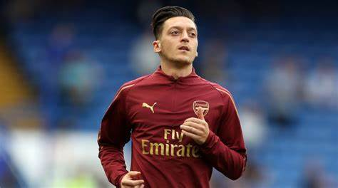

ASSITANT OF KING
OZIL
| Name | Mesut Ozil |  |
| Birthday | 15/10/1988 | |
| Nationality | German/Turkish | |
| Occupation | Football Player | |
| Year Active | 2005-present | |
| Height | 1.80m | |
| Spouse | Amine Gulse | |
| Children | Eda |
Early Life
Özil[6] was born on 15 October 1988[7] in Gelsenkirchen, North Rhine-Westphalia, as a son of Turkish immigrants.[8] His grandfather moved as a Gastarbeiter from Zonguldak, Turkey to Germany.[9] He played, at youth level, for various clubs in Gelsenkirchen during 1995~2000, before a five-year stint for Rot-Weiss Essen.[citati
Club Carrier
Schalke
In 2005, Özil moved to the youth system of Schalke 04. He was deployed a midfielder and wore 17 as his squad number, after starting as a playmaker and central attacking midfielder in the place of the suspended Lincoln in DFL-Ligapokal matches against Bayer Leverkusen and Bayern Munich.[10] Upon making the first team at Schalke, he was described as "the next big thing". However, soon after declining an offer from Schalke 04, claiming that a yearly salary of €1.5 million would not be enough, he eventually fell out with club management and moved on to Werder Bremen in January 2008.[11] This led to Mirko Slomka, the then-Schalke manager, claiming that Özil would not play another match for Schalke.
Awards
List Of Awards
| Year | Title | Club |
| 2011 | La Liga Winner | Real Madrid |
| 2013 | FA Cup Winner | Arsenal |
| 2014 | FA Cup Winner | Arsenal |
| 2014 | FIFA WORLD CUP | Germany |
Skills